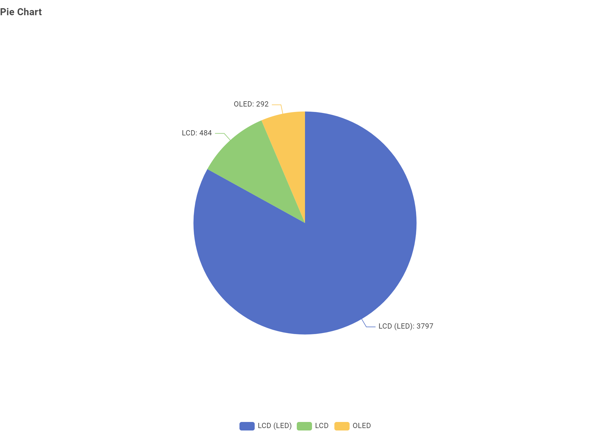
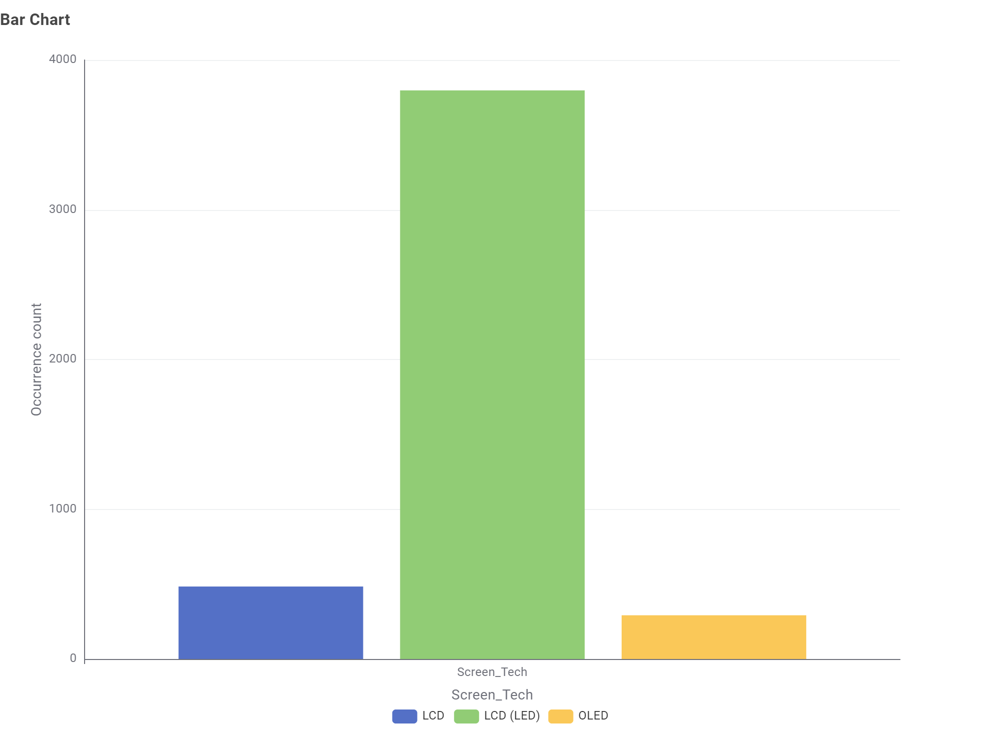
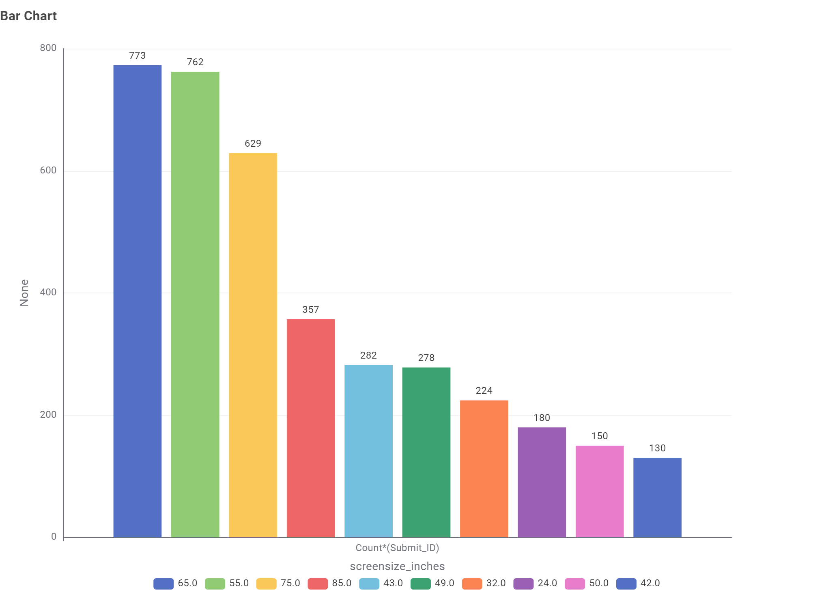
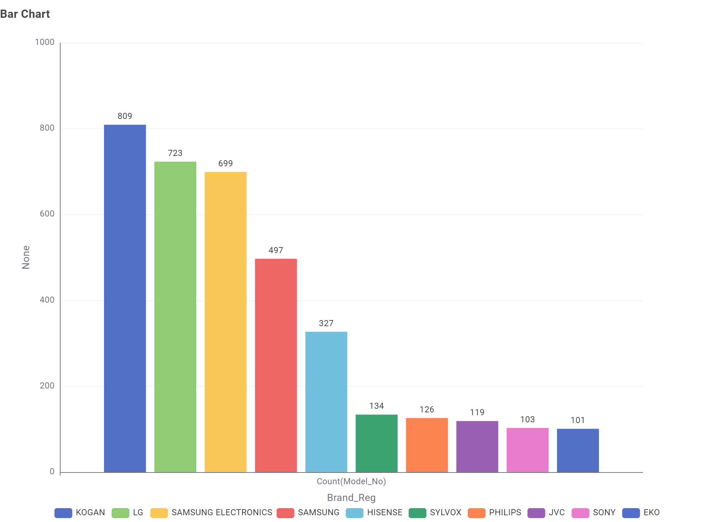
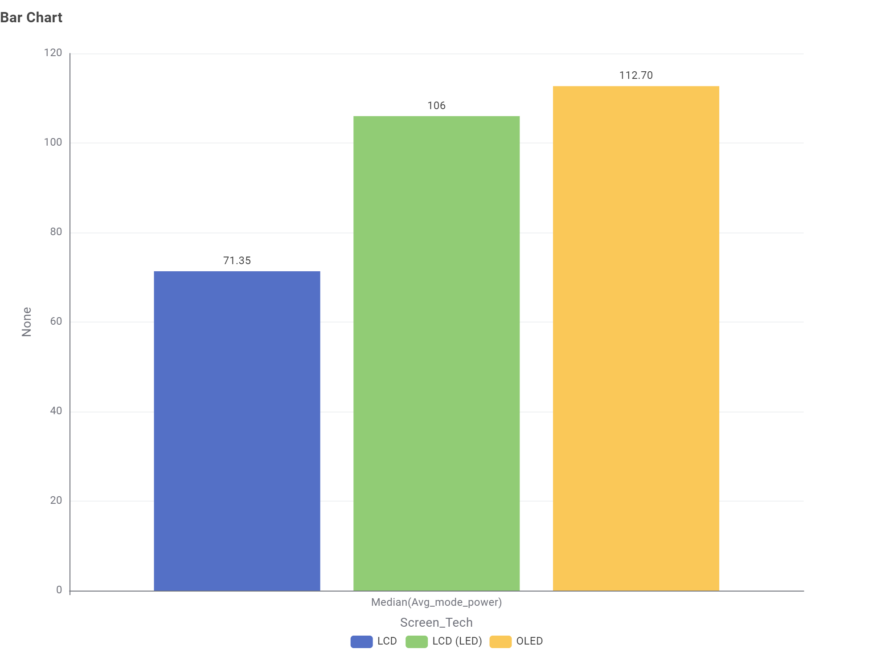
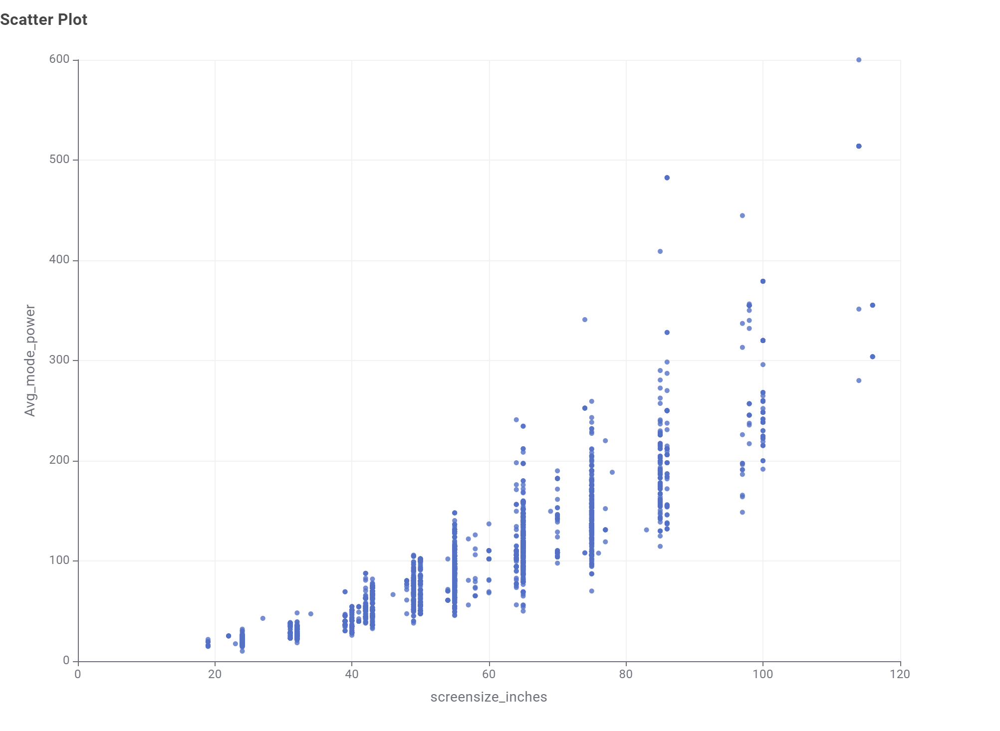
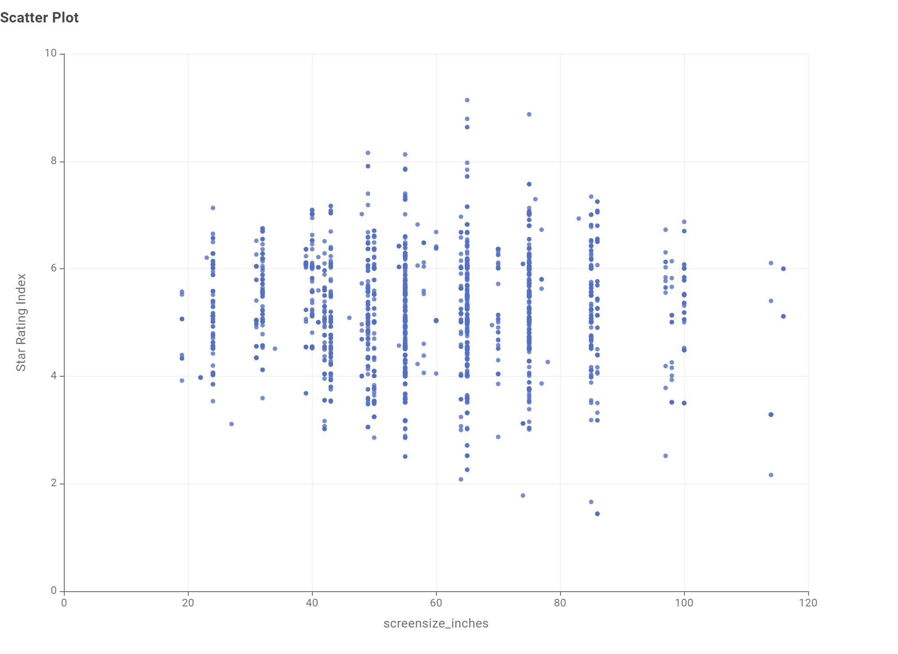
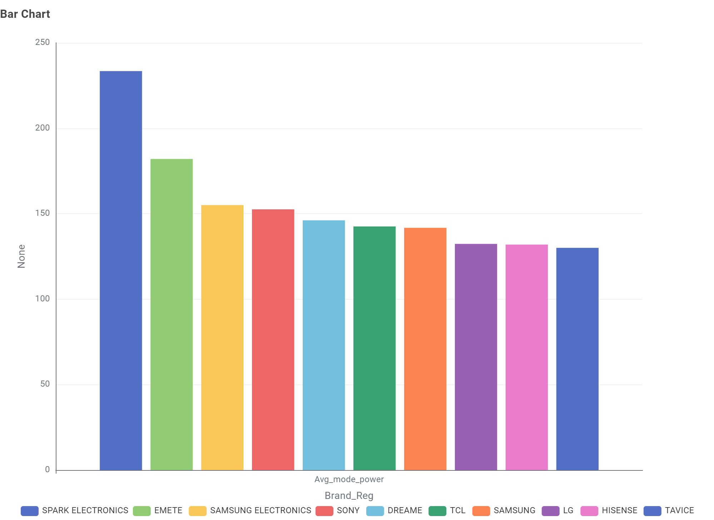
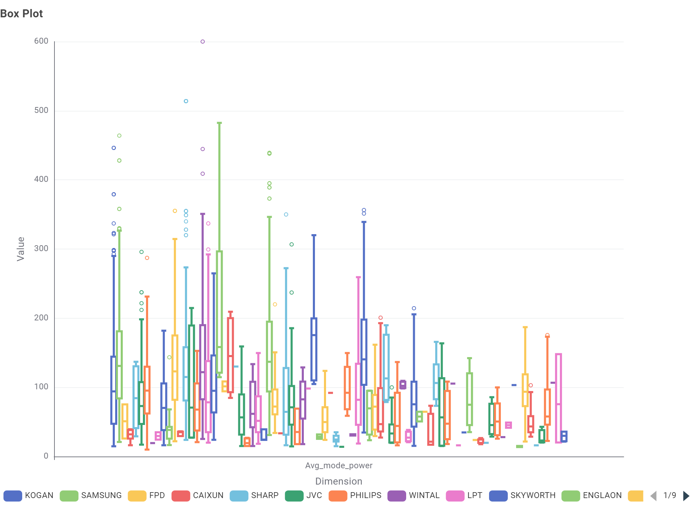

Appliance Energy Consumption in Australia
Appliances such as air conditioners, fridges, televisions and washing machines make up a large part of household electricity use across Australia. This site looks at appliance energy consumption in the Australian market, starting with televisions.
Biggest Energy Users
Heating & CoolingAir conditioners and heaters are usually among the largest energy users in an Australian home, especially in extreme weather.
Always Running
FridgesFridges and freezers run all day, every day, so their efficiency adds up over the life of the appliance.
Comparing Appliances
Star RatingsMany appliances sold in Australia carry an Energy Rating Label so buyers can compare how efficient they are.
This page is a general overview. The Televisions page uses the Australian Government’s Energy Rating data for televisions to show detailed charts.
See Televisions for the full set of charts, or About Us for more on the project and how it was built.
Televisions & Energy Use
Thinking of buying a TV? This page uses the Australian Government’s “Energy Rating Data for household appliances – Labelled Products” dataset (Televisions), published on data.gov.au, to help everyday buyers see which screen technologies, sizes and brands are on the market and how much power they use. No technical knowledge needed — each chart is followed by a plain-language takeaway.
What matters most when choosing a TV
These four questions directly affect which TV you buy.
Q1. What type of TV screen technologies are currently available in Australia and which are the most frequent?


Three technologies are available: LCD (LED), LCD, and OLED. LCD (LED) is the most frequent with 3797 models, followed by LCD (484) and OLED (292).
Q2. What screen sizes are available and which are most frequent?

The most frequent screen size is 65 inches (773 models), followed closely by 55 inches (762) and 75 inches (629). 85 inches (357) is next, and the remaining top sizes range from 130 to 282 models.
Q3. Which brands have the largest number of models?

Kogan has the most models (809), followed by LG (723) and Samsung Electronics (699). Numbers then drop sharply after the top five brands, from Hisense (327) to Sylvox (134).
Q4. Which type of screen technology consumes the least amount of power?

LCD consumes the least power, with a median of 71.35, compared with 106 for LCD (LED) and 112.70 for OLED. However, LCD is only about 10% of models, so it is less commonly available.
More context
These questions add background to help you understand the results above.
Q5. What is the relationship between screen size and power use?

Power use generally increases with screen size. Small screens (under 40 inches) mostly use under 50, while very large screens (85 inches and above) can use 200 or more, and the spread of values becomes much wider.
Q6. What is the relationship between star rating and screen size?

There is no clear relationship. Star ratings are spread from about 1.5 to 9 across the screen sizes, with most between about 3 and 7.
Q7. Are there differences in power consumption between brands?


Yes. Spark Electronics has the highest average power consumption (233.45), followed by Emete (182.03), while the other top brands are between about 130 and 155. The box plot shows that most brands also have a wide spread of values across their own models.
Conclusion
When choosing a TV, balance size, brand and efficiency. LCD (LED) TVs at 55 to 65 inches are the most common, larger screens use more power, and star ratings vary widely, so check the Energy Rating label before buying.
About Us
Appliance Energy Watch is a small website built for COS30045 Data Visualisation. It explores how much energy household appliances use in the Australian market, and is a place to host the data visualisations created across the unit.
Project Goals
- Practice building a multi-page website with a shared navigation structure.
- Use JavaScript to control page/content switching without full page reloads.
- Host the resulting data visualisations, with room to add more from future tasks.
Author
Phyllis Yong — COS30045 Data Visualisation
Use of Generative AI
This project used Claude Code, an AI coding assistant, to help
generate parts of the HTML, CSS and JavaScript. See the project
README.md file for detailed notes and a reflection on how
GenAI tools were used during development.